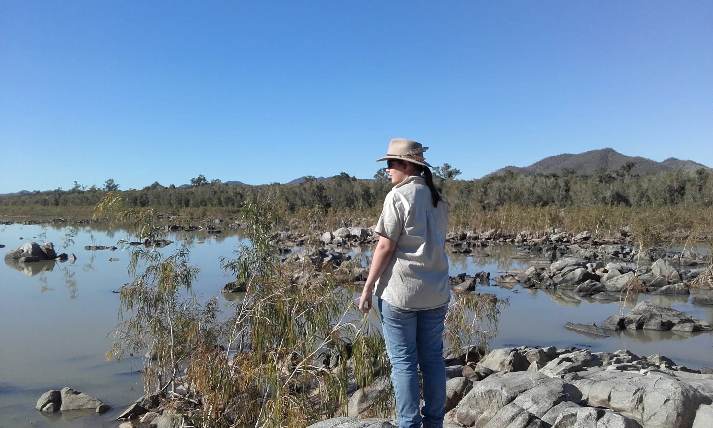
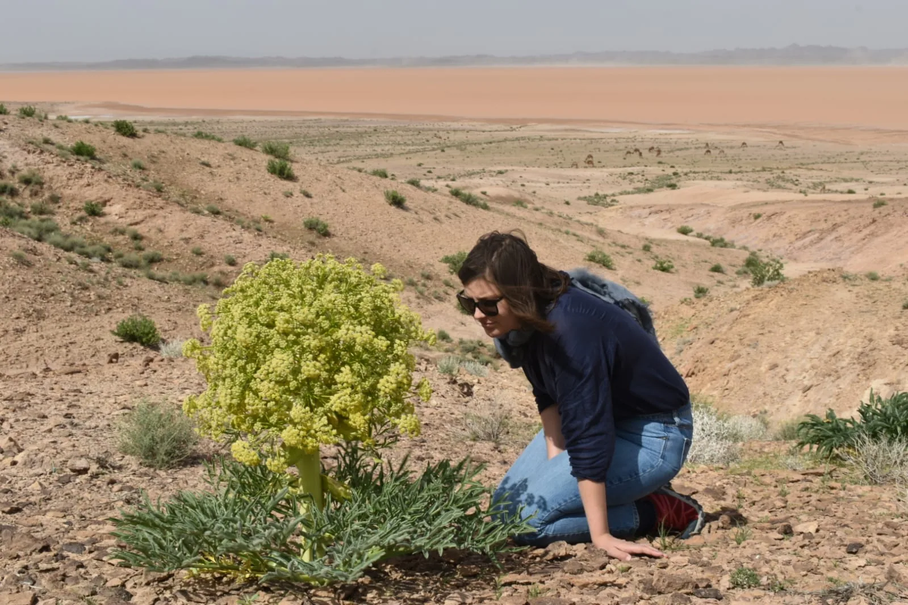
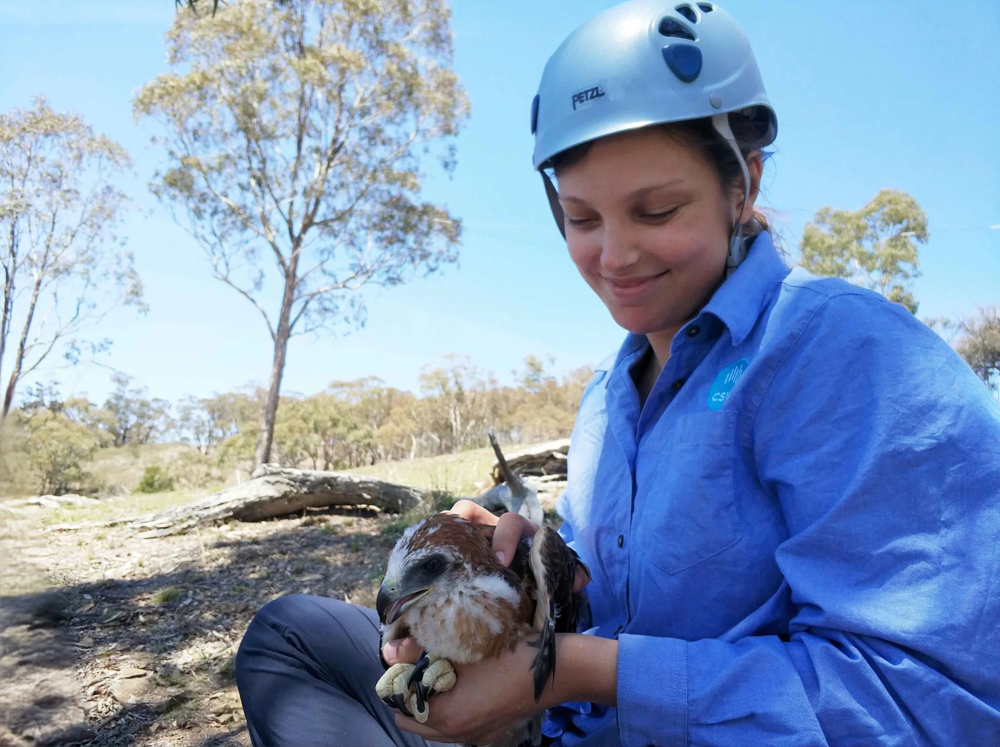
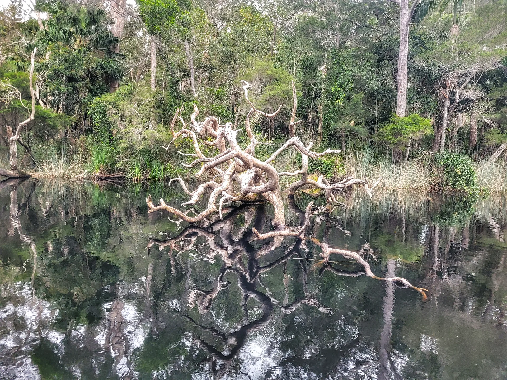

Meet Jess
I won every dollar my unfunded PhD needed. (And I actually enjoyed the grant writing.)
I'm Jess Hodgson, a PhD ecologist and founder of Keystone Impact Solutions, now owning the grants, awards and funder relationships for conservation, environment and sustainability organisations, based in Australia and working wherever you are.
Before I went looking for other people's funding, I was out finding my own.
Years as a field ecologist at CSIRO: botanical surveys in critically endangered woodlands, kayaking after spoonbills across the Murray-Darling, three months a year watching bowerbirds try to out-build each other for a mate, up before the sun in country most people never get to stand in. The other half of the job was a desk, a dataset, and working out how to show a funder why it mattered.
I could plan a field season down to the last tank of fuel. What I couldn't plan for was my body deciding the field wasn't mine to keep.
Something had to change, and it wasn't going to be the science. So I moved to the desk for good, doing operational work for conservation and purpose-led organisations.
The thing I was best at, and actually liked, was the writing. Grants, awards, the applications I'd done all through my PhD, the ones colleagues kept sending my way.
The real discovery came on the calls. Founder after founder, same story: not that they couldn't win the funding, but that chasing it was nobody's job. One said it in the words I'd been reaching for: "there's no one owning it."
So I narrowed everything to one thing. Keystone Impact Solutions owns the funding and recognition pipeline, so it stops depending on whoever has a spare hour.

I named it for the echidna.
A keystone species holds a whole system up, and the echidna does it from the bottom, just by digging. Every scrape it leaves becomes a microsite where a seed can catch and grow into something that wouldn't have made it otherwise. That's the job. I dig the small holes that let your mission take root with funders.

You don't have to explain your work to me first.
I've been the one holding the thread for organisations like Tenkile Conservation Alliance, my first client, who now have me write their grants and awards too. And because I came up through the science, you don't have to explain yours to me first. I already speak it, and I'll pressure-test your impact claims before a funder sees them.
The best part? The first time a client clocks that the deadline they were dreading is handled, and they weren't the one holding it. That's the point. Not relief from the work existing, it's real and it matters. Relief from being the only one carrying it.
still watching for the small thing everyone else walks past

Their words, not mine.
"When someone who has worked in the field of conservation then shifts into the administration side of things, it's gold. You get it Jess, so that makes it so much easier for us."Jean Thomas, Tenkile Conservation Alliance
Rules of my house.
- Shoes optional, opinions mandatory.
- The solar charges the kettle before it charges anything else (off-grid priorities).
- The 11-year-old rescue greyhound gets the good end of the couch, and is told daily he's the cleverest boy (uncontested).
- If you can't find me, check the beach.
- And nothing important gets left to "whoever has a spare hour"...the house rule that turned into a business.

Photo: MariaYou talk, I ask the right questions. That's the whole first call.
You won't have to translate your work for me first. Bring what you're doing and what's slipping, and I'll bring the questions.
Book my discovery call(opens in new tab)